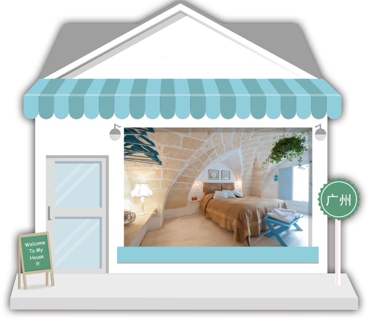

Project Type:
Team Project
(5 members)Project Roles:
UI/UX Designer
Project Duration:
3 weeks
Tools:
Photoshop, Sketch, Illustrator
Design Introduction

Couch surfing has become a popular way to travel among Chinese young people. These travellers need a platform to share couch surfing information and experience, so an online platform will be convenient for them to network with others. This was the reason for my friends and I wanted to make COUCHER, an App for sharing not only couch surfing information, but also stories happening between travellers.
My role in this project was designing the UX flow and creating low and high prototypes.
Design Highlights
We analyzed several mobile applications that can be used to gather couch surfing information. We found that detailed information was difficult to be found online and C2C (Costumer-to-Costumer) business model was best for our product.

- Easy to post and search for couch surfing information
- A platform for travellers to share personal stories
- An online social environment to communicate with other travellers
One big problem in China to do C2C model in App is the trust issue. To solve this problem we planned to check identity of hosts before they offer couches by photo IDs or detailed personal information.

{kind=link}
{kind=link}
{kind=link}